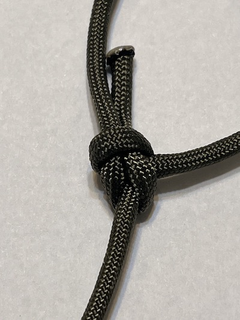
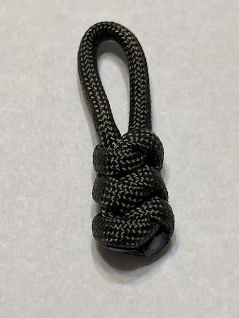

Paracord Creations
Knot Tying.
This page contains reference materials and links to tutorials from content creators on how to tie knots.
Utility Knots.
These knots help make camping and manual tasks easier to do.
Constrictor knot.

The constrictor knot is used to securely bind things to each other. Once you tighten it around an object, it is nearly impossible to untie. Do not use the knot on limbs or other body parts or blood flow to the area will be cut off.
Bowline knot.
The bowline knot is used to create a secure loop when rescuing a person. When practiced enough, it can be tied quickly with one hand, which can be life-saving if a victim has an injured arm or time is of the essence. The knot is also useful for any situation where a secure loop is needed. The knot is easy to untie, even when it is tightened.
Project knots.
These are some of the knots that you will use to make parachute cord projects.
Cobra knot.

The cobra knot is a very popular knot for crafts. It is often used for making bracelets and lanyards. It can be tied with one single parachute cord color or two if you melt the ends of the parachute cord together.
Snake knot.
The snake knot is another popular knot for crafts. It is mostly used for making lanyards. It can be tied with one single parachute cord color or two if you melt the ends of the parachute cord together.
Diamond knot.

The diamond knot is used as a stopper knot so the ends of a rope will not fall out of a hole or loop. It is also used as a decorative knot to finish the ends of lanyards.
Cow's hitch knot.

The cow's hitch knot is used to attach a piece of parachute cord to a buckle or a clasp.